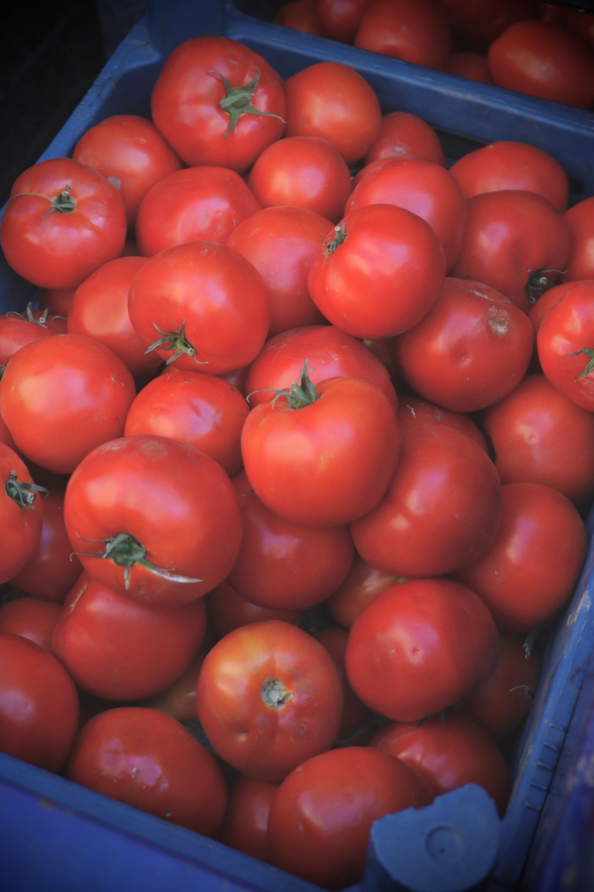
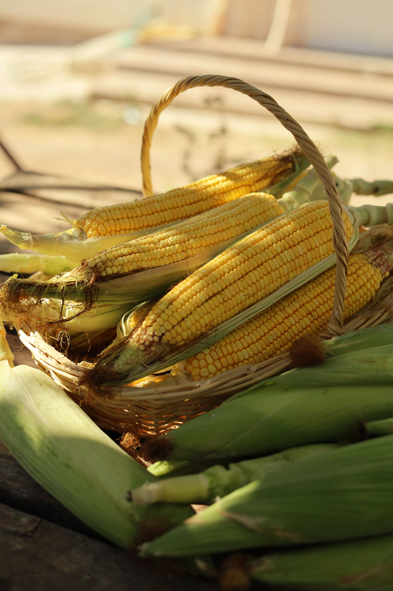
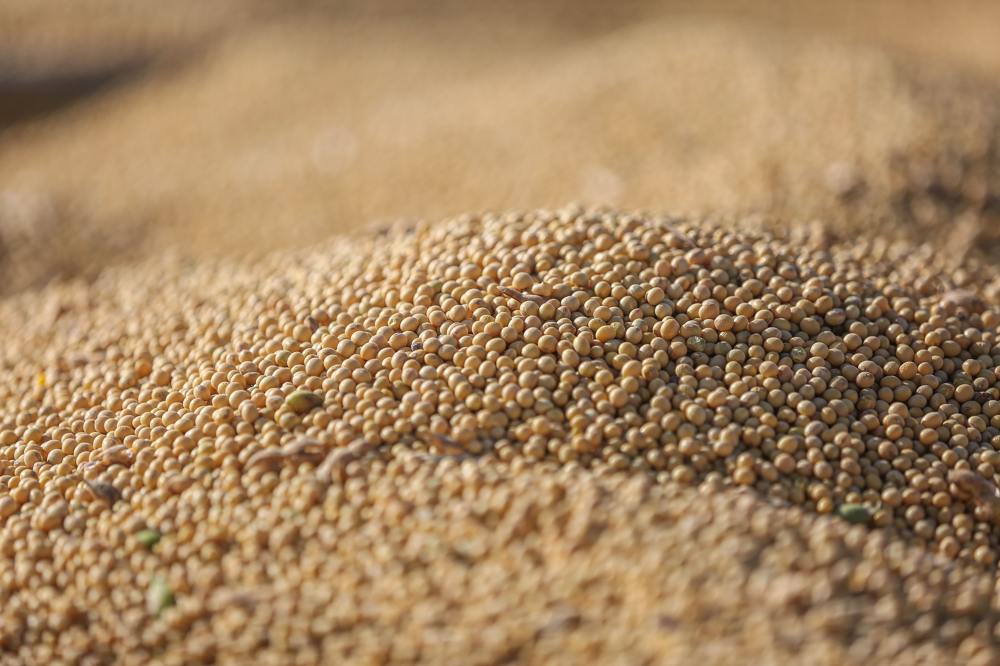
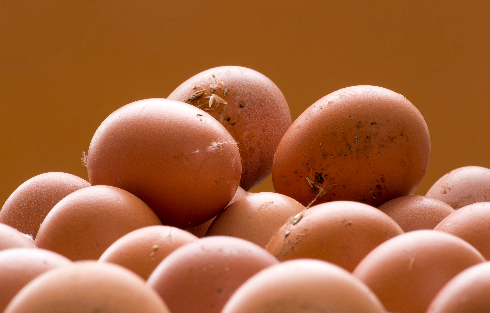

Fresh Tomatoes
Ndola, Copperbelt Province
Fresh, locally grown tomatoes. Harvested in season and suited for household cooking, restaurants and traders.
K25 / kg
Available
AgroNest · Ndola, Zambia
Our integrated farm combines crop and livestock production with practical services, training and agricultural information.
From local farms
Fresh produce from farmers in Ndola and the Copperbelt. View a product, explore the farm it comes from, and contact the farmer directly.

Ndola, Copperbelt Province
Fresh, locally grown tomatoes. Harvested in season and suited for household cooking, restaurants and traders.
K25 / kg
Available

Ndola, Copperbelt Province
Staple maize from responsible crop production. Available after harvest season. Suitable for household consumption, mills and institutional buyers.
K90 / 50 kg bag
Available

Ndola, Copperbelt Province
Broiler chickens from an attentively managed flock. Suitable for households, restaurants and traders. Contact us for current flock availability.
K120 / bird
Available

Ndola, Copperbelt Province
Fresh leafy rape grown for local food markets. A popular vegetable for household and institutional use. Seasonal availability applies.
K15 / bundle
Out of season

Ndola, Copperbelt Province
Soybeans grown as part of a crop rotation plan. Suitable for processors, traders and institutional buyers. Contact us for bulk enquiries.
K110 / 50 kg bag
Available

Ndola, Copperbelt Province
Fresh eggs from layers maintained with good husbandry and flock health care. Suitable for households, restaurants and institutional buyers.
K75 / tray (30)
Available
Availability and prices vary by season and current production. Contact AgroNest for up-to-date information or to place an enquiry.
Enquire about a product Sell Your ProduceField production
Crop production focuses on food crops and horticulture, guided by seasonal planning and responsible soil and water management.
A staple crop supported by thoughtful variety selection, field preparation and timely crop care.
A legume crop included in diversified production and crop rotation planning.
A leafy vegetable crop grown for fresh local food markets.
A horticultural crop requiring attentive water, nutrient and pest management.
Animal production
Livestock production is an important part of a diversified farm and local food supply.
Poultry meat production supported by attentive housing, nutrition and flock care.
Egg production from layers, with good husbandry and flock health as priorities.
Small-ruminant production that contributes to a mixed and resilient farming system.
Practical support
We share practical support for farm decisions, production knowledge and sustainable soil care.
Guidance on farm planning and crop and livestock production, shaped around a farmer's context.
Practical learning and knowledge sharing on farming methods and farm management.
Accessible tips and resources to support informed agricultural decisions.
An organic soil amendment that can contribute nutrients and organic matter; use according to crop and soil needs.
Availability and timing can vary by season. Contact AgroNest to ask about current production, service details or training opportunities.
Contact AgroNest